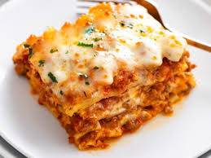

Lasagna

Description
Homemade Lasagna is a family favorite and a great way to feed a crowd.
While there are a few steps, this lasagna recipe is relatively easy to make and has so much flavor.
Ingredients
- Spices
- Ricotta Cheese
- Garlic
- Pasta Sauce
- Beef and Sausage
- Mozarella
- Egg
- Parsley
- Lasagna
- Tomato Paste
- Onion
- Parmesan
Steps
- Boil pasta: In a large pot of salted water boil lasagna noodles per the recipe below.
- Prepare meat sauce: Cook sausage and beef with onion and garlic. Drain well, add the pasta sauce (I love this brand) & simmer it for a few minutes to thicken.
- Combine cheese mixture: Stir the cheese mixture together in a bowl.
- Layer & bake: Layer the meat sauce and cheese mixture with lasagna noodles and bake until the top of the lasagna is golden brown.